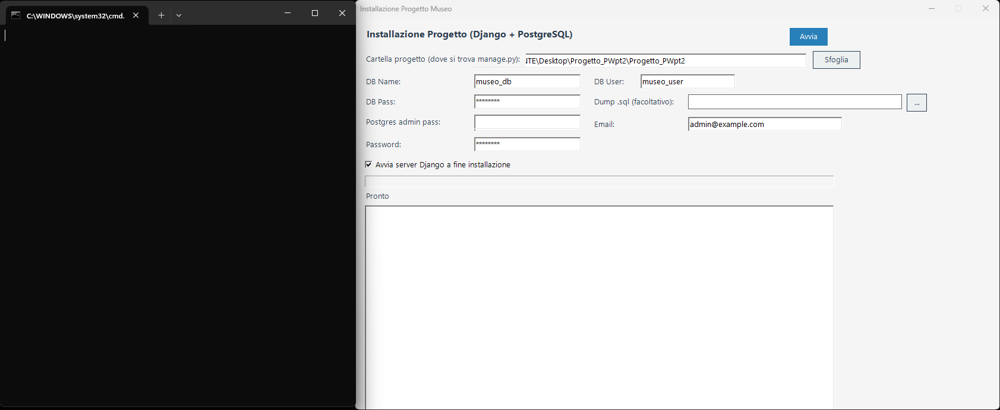

Museo - Progetto PW25 (Django + Bootstrap)
Requisiti
- Python 3.10+ correttamente inserito nel PATH di sistema
- PostgreSQL correttamente inserito nel PATH di sistema
- Tutto il resto viene installato automaticamente dallo script (
requirements.txt)
Installazione (Windows)
1. Estrarre il progetto in una cartella oppure clonarlo da github
2. Aprire la cartella ed entrare in scripts
3. Fare doppio click su start_setup.bat
4. Si aprono:
- un wizard grafico di installazione
- una finestra di comando (shell)

5. Nel wizard:
- usare Sfoglia per selezionare la cartella principale del progetto (quella con
manage.pyo la cartelladatabase) - usare ... per selezionare il file
dump.sqlche si trova nella cartella database - inserire nel campo Postgres admin pass la propria password postgreSQL (quella scelta al momento dell'istallazione di PostgreSQL)
- lasciare invariati gli altri campi

6. Cliccare Avvia
7. A questo punto il wizard procede nell'istallazione automaticamente, a fine download si apriranno:
- il sito sul proprio browser predefinito
- una power shell dove vengono visionati tutti i log
8. (Opzionale) Nel caso non si dovesse aprire il sito, (a primo impatto il sito non si carica, bisogna aspettare il caricamento del server django (pochi istanti)), sopra la console dei log del wizard o all'interno della power shell viene mostrato il link cliccabile dove viene aperto il sito
Problemi comuni
1. Python non trovato
- verificare che il comando
pyfunzioni da terminale - se non funziona, aggiungere Python al PATH di sistema
2. PostgreSQL non trovato
- verificare che il comando
psqlfunzioni da terminale - se non funziona, aggiungere PostgreSQL al PATH di sistema
In caso di ulteriori problematiche consultare il file relativo ai problemi comuni
Backup installazione sicuro (riga di comando)
Se l’installazione tramite wizard e shell non funziona, è possibile usare una procedura alternativa da riga di comando.
È più lunga e manuale, ma garantisce sempre il corretto funzionamento.
Tutti i comandi da eseguire (uno per volta, nell’ordine) sono contenuti nel file start.txt nella cartella scripts.
Di seguito la spiegazione di ciascun comando:
1. Posizionarsi nella cartella del progetto
cd "PERCORSO\cartella\del\progetto" Porta la console dentro la cartella principale del progetto (quella dove si trova manage.py).
2. Creare un ambiente virtuale Python
py -m venv .venv Crea una cartella .venv che contiene un ambiente isolato di Python.
Serve per installare le dipendenze del progetto senza toccare quelle globali del PC.
3. Abilitare l’esecuzione di script PowerShell (se richiesto)
Set-ExecutionPolicy -Scope CurrentUser -ExecutionPolicy RemoteSigned Alcuni PC non permettono di eseguire script .ps1.
Con questo comando si concede il permesso.
Dopo averlo eseguito, chiudere e riaprire PowerShell, poi ripetere dal punto 1.
4. Attivare l’ambiente virtuale
.\.venv\Scripts\Activate.ps1 Attiva l’ambiente Python locale. Da questo momento, tutti i pacchetti installati finiscono dentro .venv.
5. Aggiornare pip
pip install --upgrade pip Porta pip (il gestore pacchetti di Python) all’ultima versione, evitando errori di compatibilità.
6. Installare le dipendenze del progetto
pip install -r requirements.txtInstalla tutte le librerie necessarie (Django, Bootstrap, Pillow, ecc.).
7. Creare un utente PostgreSQL per il progetto
psql -U postgres -c "CREATE USER museo_user WITH PASSWORD 'museo_pw';" Crea un nuovo utente chiamato museo_user con password museo_pw. (IMPORTANTE non modificare i parametri password e utente poichè sono quelli utilizzati nel file .env del progetto, se si volessero cambiare i parametri occore modificare il file .env)
8. Abilitare i permessi di creazione database all’utente
psql -U postgres -c "ALTER USER museo_user CREATEDB;" Concede a museo_user il permesso di creare database.
9. Creare il database del progetto
psql -U postgres -c "CREATE DATABASE museo_db OWNER museo_user;" Crea un database chiamato museo_db e lo assegna come proprietario a museo_user.
10. Caricare il dump iniziale dei dati
psql -U museo_user -d museo_db -f "PERCORSO_COMPLETO\dump.sql" Importa i dati dal file dump.sql dentro il database museo_db.
⚠️ Sostituire PERCORSO_COMPLETO con il percorso reale del file.
11. Applicare le migrazioni Django
py manage.py migrateCrea tutte le tabelle necessarie al funzionamento del progetto (gestite direttamente da Django).
12. Creare un superuser Django
py manage.py createsuperuserCrea un utente amministratore per accedere al pannello admin di Django.
Verranno richiesti username, email e password.
13. Avviare il server Django
py manage.py runserverAvvia il sito in locale. Per default è disponibile su http://127.0.0.1:8000.
14. Aprire il sito nel browser
Dopo l’avvio, copiare e incollare nel browser l’indirizzo mostrato (di solito http://127.0.0.1:8000), oppure ctrl+click il link.
Con questa procedura manuale il progetto viene installato e avviato senza passare dal wizard grafico.